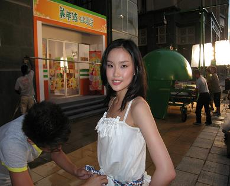
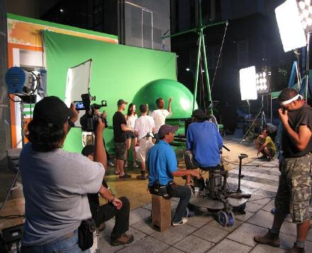
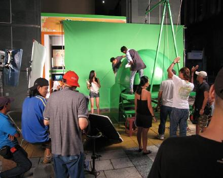
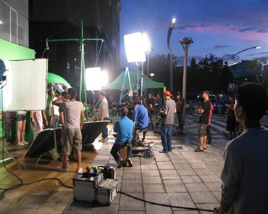
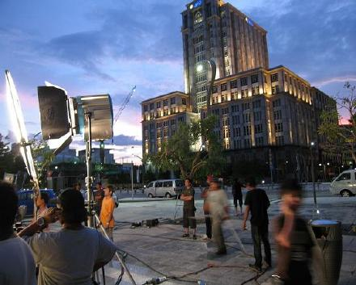
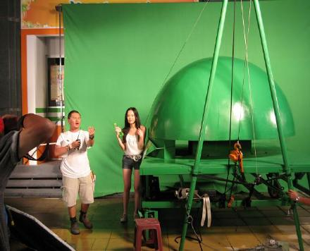
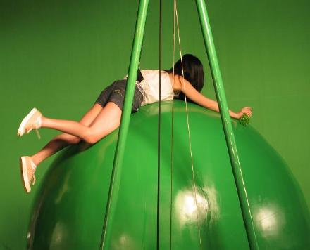
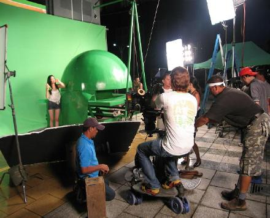
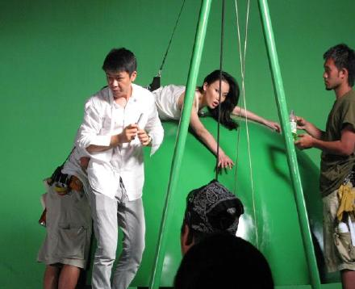
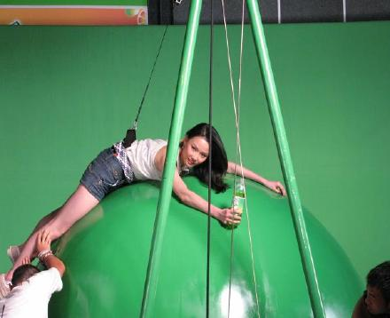

记得上一次吊威亚是我的第一部电视剧<金甲战士>,一部科幻片,我在里面演一个会飞来飞去的外星人,估计只有小朋友们看过,比起那次吊威亚要轻松多了
这个镜头是要拍我喝了一口美年达之后,被一只超级大的苹果球滚走了,我要从地面被吊上这个球,也不是吊就可以,其实需要配合的很好才行,为了我可以顺利的吊上去,工作人员在球上涂了很多BABY油...
准备中...工作人员正在检查我的威亚是否传的正确和安全

摄影师正在对镜头,导演也在和我说戏...

要起吊拉...

天开始黑了,我要拍的确是白天,不得不多打一只灯了

黄昏很美

先试一边

看到吧,配合的不好就会这样子

再一次

我已经爬到球上就不能动了,所以化妆师必须也爬上来给我补妆

